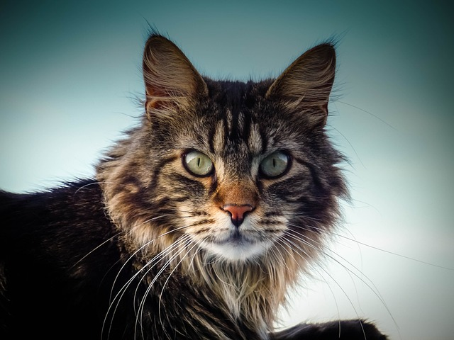

Maine coon on kissaroduista suurin, rakenteeltaan vahva ja lihaksikas, ja sillä on mahtavat jalat. Kuono on kulmikas ja kissalla on suuret korvat, jotka ovat pystyssä ja kaukana toisistaan. Kissan turkki on pitkä ja paksu ja siinä on pohjavillan päällä runsas, kiiltävä, vedenpitävä peitinkarva. Karva on lyhyempää kissan pään, niskan ja hartioiden kohdalla ja pidempää selässä, kyljissä ja hännässä. Vatsan ja takapuolen karva on muhkea ja pörröinen. Kissoilla on korvien tyvestä alkava kauluri, joka on uroksella paksumpi kuin nartuilla. Häntäkarvat ovat pitkät ja tuuheat. Korvissa on tupsut. Myös tassuissa on tupsut, jotka luovat lumikenkämäisen vaikutelman. Maine coon -rodussa esiintyy noin 30 väritystä. Silmät voivat olla vihreät, kullanväriset tai kupariset, valkoisilla yksilöillä myös siniset tai keskenään eri väriset.